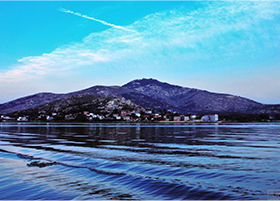
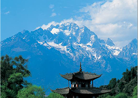
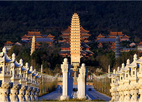
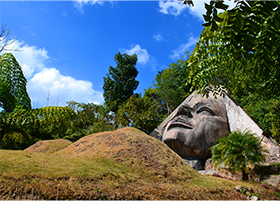

还在纠结不知道去哪里玩耍？让我来帮你决定吧！♥
-
束河古镇
束河是纳西先民在丽江坝子中最早的聚居地之一，束河古镇这里有各色各样的酒吧、茶馆、饭店、商店和客栈，中餐、西餐、各地的小吃都有，选择很多，很方便，价格也合理。
-
松赞林寺
噶丹·松赞林寺是云南省规模最大的藏传佛教寺院，也是康区有名的大寺院之一，还是川滇一带的黄教中心，在整个藏区都有着举足轻重的地位，被誉为“小布达拉宫”。
-
喜洲
喜洲镇位于大理市北部，西倚苍山，东临洱海，隋唐时期称“大厘城”，是南诏时期“十睑之一”，是电影“五朵金花”的故乡，云南省著名的历史文化名镇和重点侨乡之一。
-

苍山洱海
“下关风，上关花，苍山雪，洱海月” 是这里迤逦风光的四大景致。洱海到苍山之间是一片扇形的冲击平坝，这里田地肥沃、村落相连，崇圣寺三塔笔立挺拔，素有“风景画廊”之称，风光、名胜、民俗融为一体。
-

玉龙雪山
玉龙雪山在纳西语中被称为“欧鲁”，意为银色的山岩。其十三座雪峰连绵不绝，宛若一条“巨龙”腾越飞舞，故称为“玉龙”。又因其岩性主要为石灰岩与玄武岩，黑白分明，所以又称为“黑白雪山”。
-

崇圣寺三塔
崇圣寺三塔位于大理古城西北部1.5公里处，西对苍山应乐峰，东对洱海，距山脚约为1500米。南336米处有桃溪向东流过。北76米处有梅溪，东靠滇藏公路。三塔由一大二小三阁组成。
-

基诺山寨
基诺山寨景区以巴坡自然村寨为依托，将基诺族浓郁的民族风情、历史文化、神秘的原始宗教文化、古朴的生产生活方式、服饰及秀美的自然风光融为一体展现给游客……引人入胜，让人留连忘返
-
望天树
望天树，别名擎天树，大乔木，高40-60米，胸径60-150厘米；树皮灰色或棕褐色，树干上部的为浅纵裂，草包下部呈块状剥落。
-
挖色镇
三面环山，一面临海，西对如屏苍山而遥望大理古城，东通佛教胜地鸡足山而隐窥金顶，自古即为洱海东岸一个美丽富饶的鱼米之乡，是洱海地区历史渊源长远的白族本土文化发源地之一。